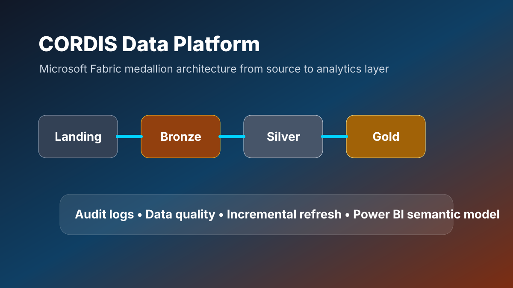

Microsoft Fabric Data Engineering
CORDIS Fabric Data Platform
Microsoft Fabric Lakehouse solution for CORDIS European research data using Landing, Bronze, Silver and Gold processing, audit logging, validation and Power BI semantic modelling.

4 layers
Landing, Bronze, Silver and Gold lakehouse design.
82K+
Cleaned CORDIS projects prepared for reporting and search.
Gold model
Fact and dimension tables for Power BI analytics.
Summary
This project creates an analytics-ready data platform that standardises CORDIS project, organisation, publication, deliverable, report, IPR and policy-priority data for reporting.
Architecture
Source ZIP/CSV/JSON→Landing→Bronze→Silver→Gold→Power BI
Detailed Explanation
- Metadata-driven extraction from CORDIS Horizon, H2020 and FP7 sources.
- Bronze loading with file format handling and schema checks.
- Silver transformations for standardised names, types, status values and country names.
- Gold semantic model using fact and dimension tables.
- Audit tables and row-count checks for reliability and debugging.